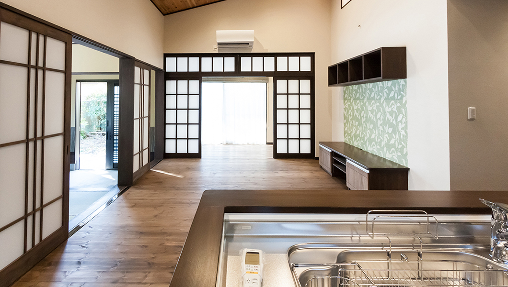
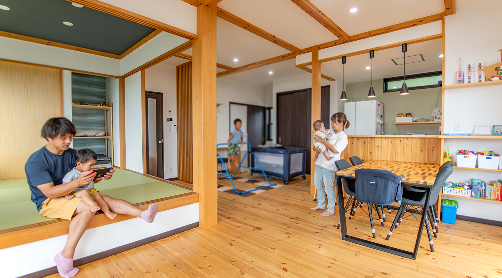
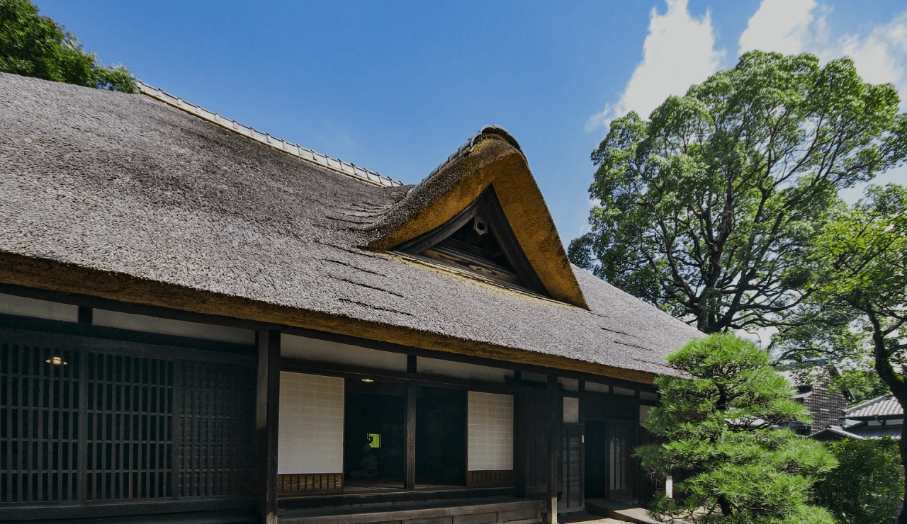
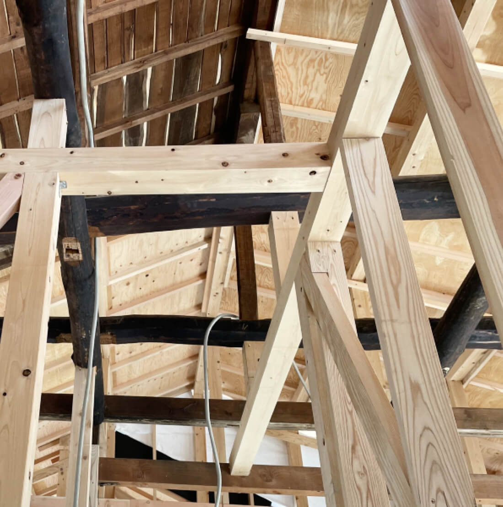
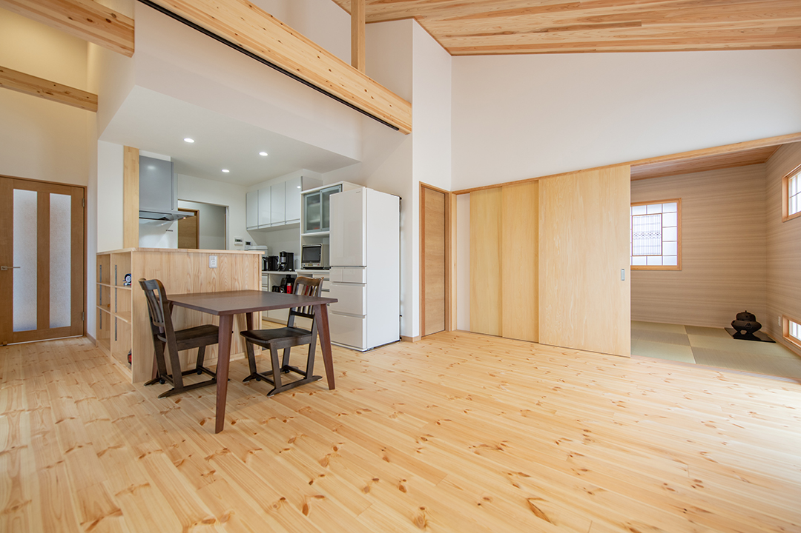
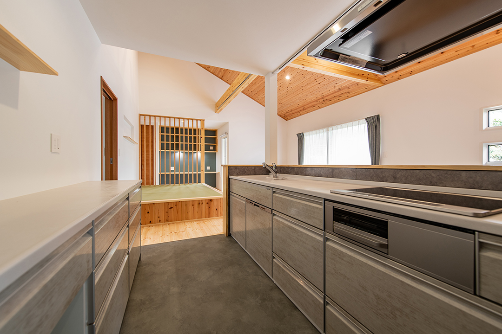
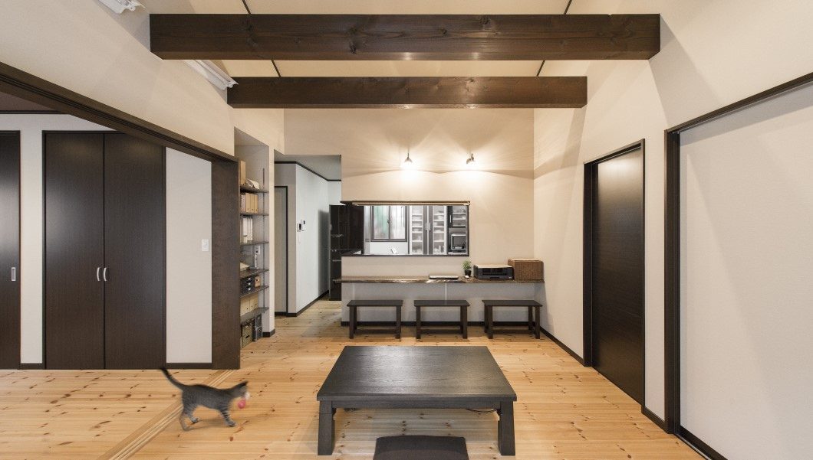

[モックの家]リフォームで叶う
新しい暮らしと生活
新築や建て替えより、賢く、お得に、理想の住まいへ！
コストは抑え、性能も暮らしやすさもアップ

間取り変更や断熱改善、水回りリフォームはもちろん、お子様の成長に合わせた学習スペースの造作や、大切なペットのためのキャットウォークづくりなど、ご家族それぞれの暮らし方に合わせた住まいづくりをご提案します。新築だとご不安な費用も、リフォーム/リノベーションなら費用を抑えて改善ができます。
些細なお悩みでもお気軽にご相談ください
資料請求・お問い合わせ
01
お金の不安を、
お金の不安を、
納得の選択に変え、
新たなお家に変える
リノベーションは、新築と比べてコストを抑えやすい住まいづくりです。築年数が長ければ固定資産税の負担が軽くなる傾向があり(減築ならさらに固定資産税が下がります)、さらに国がストック住宅を生かす方針にシフトしたことで、リフォーム・リノベーションの補助金が期待でき、トータルコストを抑えられる可能性があります。

02
思い出はそのままに
思い出はそのままに
新しい木のぬくもりを
紡ぐ、あなただけの住まい
古き良きものは残しながらも、これから住む方の生活スタイルを見極め、最適な住まいをご提案いたします。例えば、思い出の詰まった古民家でも、夏は涼しくても、冬は寒いといった良い点・悪い点が混在します。弊社は、梁・柱・木製建具などは残しつつ、耐震性/耐熱性/間取り変更などの性能は向上させ、デザインにも配慮した新しい住まい方をご提案いたします。

03
群馬の冬も乗り越える
群馬の冬も乗り越える
地元を知り尽くした
断熱/耐震リフォーム
リノベーションでも、見た目だけでなく断熱性や耐震性といった「暮らしの安心」に関わる性能を大切にしています。築年数の経つと「このまま住み続けて大丈夫だろうか」と不安に感じる方も多くいらっしゃいます。当社では、有資格者による調査・耐震診断（インスペクション）を行い、そのうえで、一棟ごとに最適な補強・改修をご提案し、安心して暮らせる住まいへと整えます。

04
帰るたびに、木の香りに
帰るたびに、木の香りに
包まれる。深呼吸したく
なるリビングへ
私たちは、自然素材の心地よさと、既存素材の価値を大切にした住まいづくりを行っています。新しく取り入れる建材は、質感や耐久性にこだわり、長く快適に暮らせるものを選定。一方でリノベーションでは、柱や梁、建具など、これまで大切に使われてきた素材をできる限り活かします。新しいものと、これまでの良さを組み合わせることで、時間の積み重ねを感じられる、唯一無二の住まいをつくります。

05
一日のはじまりも
一日のはじまりも
終わりも、気持ちよく
過ごせる場所へ
水回りは、毎日の「使いやすさ」が暮らしの質を大きく左右します。当社では、キッチン・お風呂・トイレといった設備の更新や入れ替えだけでなく、動線や配置まで見直すことで、家事の負担を軽減し、より快適でストレスの少ない暮らしを実現します。ご家族構成や生活スタイルに合わせた最適なプランをご提案します。

06
家族の数だけ、
家族の数だけ、
ちょうどいい
住まいがある
住まいのかたちは、ご家族ごとに異なります。中古物件の購入や空き家の活用、実家の住み継ぎなど、様々なリノベーションのご相談が増えています。私たちは地域に根ざした会社として、困ったときにすぐ頼れる存在でありたいと考えています。子どもスペースやキャットウォークの造作など、細かなご要望にも柔軟に対応し、ご家族にとって心地よい住まいづくりをお手伝いします。
些細なお悩みでもお気軽にご相談ください
資料請求・お問い合わせ